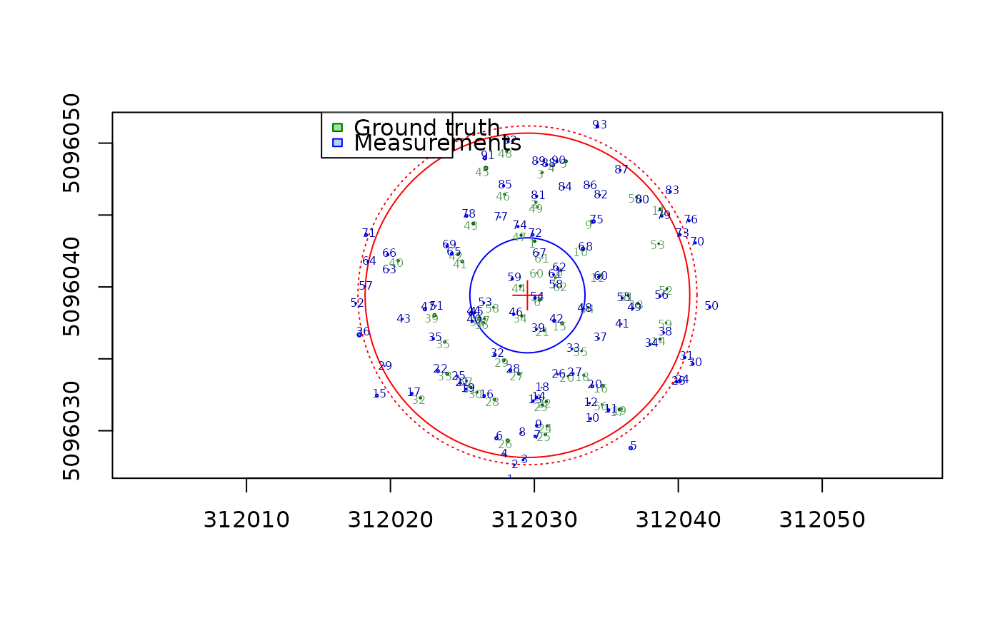

make_mapmatching.RdPrepares a structured object containing inventory trees, measured trees, a center point, and a matching radius. This object is used as input for tree matching algorithms.
make_mapmatching(inventory, measured, center, radius = 11.28)An `sf` object of class `"TreeMap"` representing the ground truth inventory trees.
An `sf` object of class `"TreeMap"` representing the lidar measured trees.
A numeric vector of length 2 representing the X and Y coordinates of the center point.
A numeric value indicating the plot radius (in projection units). Default is 11.28.
A `TreeMapMatching` object: a list with components:
inventory: the standardized inventory `sf` object
measured: the standardized measured `sf` object
center: an `sfc_POINT` geometry representing the center
radius: the radius used for filtering measured points
Both `inventory` and `measured` must be standardized using the standardize function.
The function checks that both inputs use the same coordinate reference system (CRS).
The center point is converted into an `sf` geometry with the same CRS as the input data.
data(PRF025_Field)
PRF025_Field <- standardize(
PRF025_Field,
xname = "Field_Xpj",
yname = "Field_Ypj",
zname = "DBH",
zunits = "cm",
crs = 2959)
center = c(PRF025_Field$Easting[1], PRF025_Field$Northing[1])
data(PRF025_Lidar)
PRF025_Lidar <- standardize(
PRF025_Lidar,
xname = "X",
yname = "Y",
zname = "DBH",
zunits = "m",
crs = 2959)
treemap = make_mapmatching(PRF025_Field, PRF025_Lidar, center, 11.28)
plot(treemap)
